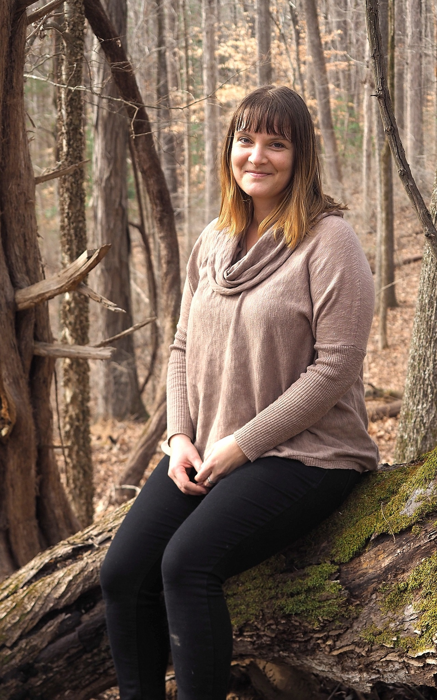

Katie Kenlan (she/her)

Hi my name is Katie Kenlan and I grew up in the woods of Chatham County North Carolina. Deep Chatham as we call it. I’ve always felt at home outside and in the natural environment. It’s a passion of mine to share my love and excitement for the outdoors with children. I was an Environmental Studies major at Antioch College in Ohio before coming to UNC where I recently graduated from the Latin American Studies department. I completed a senior honors thesis titled, Why the Latin American Environmental Education Model Ecopedagogy is Uniquely situated to Address Shortfalls within Environmental Education. This thesis was awarded the Federico Gill Award for best undergraduate honors thesis on a Latin American or Caribbean topic.
While studying at the University, I was a co-teacher at a Reggio Emilia based preschool in Carrboro, the Morningside School. Before that I had a long history in childcare. The most influential programs in my career are the Community Independent School in Chapel Hill, Clapping Hands Farm, a 100 acre off the grid program in Pittsboro and The Morningside School in Carrboro.
In all three of these workplaces I focused on child mediation skills and promoting positive, clear communication amongst children. It’s a passion of mine to help young people develop cooperative group skills and to better understand their own feelings so they can express them to friends and those around them. Some random facts about me are, I was adopted as a baby, play the accordion, speak Spanish and built my house with my own two hands using locally sourced materials. I’ve had several jobs focused on food security and the local food movement and dabbled in organic farming for several years. My most recent career development workshop was in the mountains of North Carolina at the Eastern Region Association of Forest and Nature Schools in 2019 and at The Irvine Nature Center in Maryland.